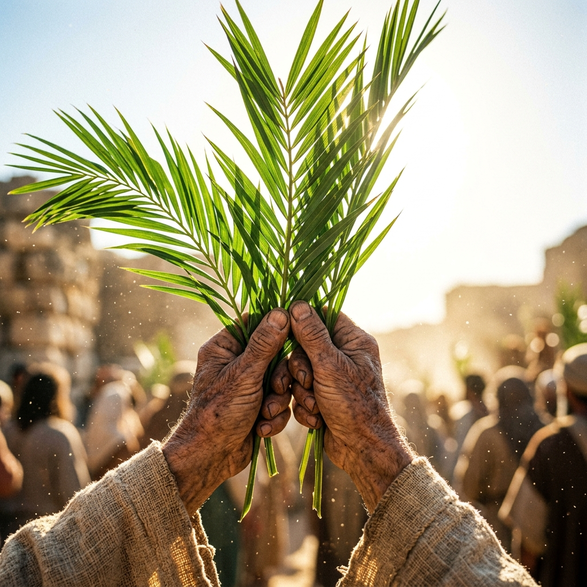
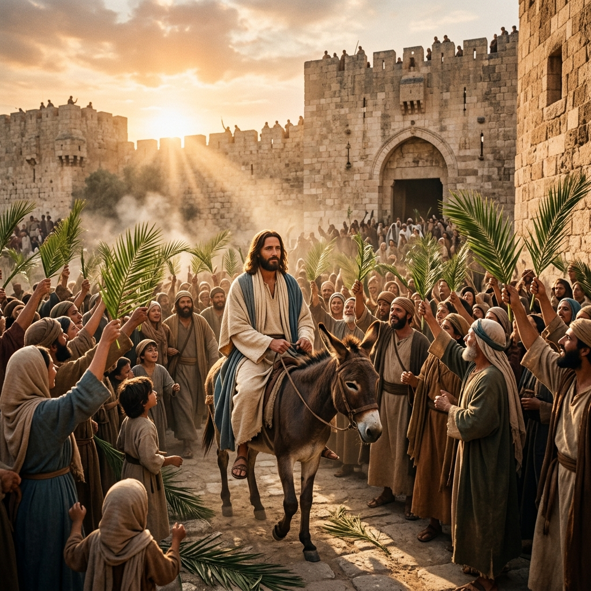

Domingo de Ramos en la Pasión del Señor | Ciclo A

Hermanos, en este día nos alegramos de haber sido convocados por Dios como Asamblea (Ecclesia) para iniciar la Semana Santa, la razón de esto es recordar y manifestar que Cristo no sólo es nuestro salvador, sino también nuestro Dios y Señor. Nosotros también le aclamamos como lo hiciera Jerusalén. Sin embargo, nosotros queremos serle fiel y no darle la espalda como lo hiciera aquella muchedumbre que primero gritaba "Hosanna al Hijo de David" y pocos días después gritaran "¡Crucifícalo!"
Hoy queremos con estas palmas, que devotamente conservaremos, garantizar que le seguiremos hoy, mañana y hasta el último día de nuestras vidas.
Hoy queremos manifestar que nuestro Dios está en medio de nosotros, como Dios y como Señor.
Dispongámonos a participar fervorosamente.
El Coro inicia con una estrofa del canto inicial.
"Hosanna al Hijo de David. Bendito el que viene en nombre del Señor, el Rey de Israel. Hosanna en el cielo."
El que preside saluda a la Asamblea de la manera acostumbrada y hace una breve exhortación.
Sacerdote: Queridos hermanos: Después de haber preparado nuestros corazones desde el principio de la Cuaresma con nuestra penitencia y nuestras obras de caridad, hoy nos reunimos para iniciar, unidos con toda la Iglesia, la celebración anual del Misterio Pascual, es decir, de la pasión y resurrección de nuestro Señor Jesucristo, misterios que empezaron con su entrada en Jerusalén, su ciudad. Por eso, recordando con toda fe y devoción esta entrada salvadora, sigamos al Señor para que participando de su cruz, tengamos parte con Él en su resurrección y su vida.
Sacerdote: Oremos: Dios todopoderoso y eterno, santifica con tu bendición + estos ramos, para que, quienes acompañamos jubilosos a Cristo Rey, podamos llegar, por Él, a la Jerusalén del cielo. Él que vive y reina por los siglos de los siglos.
R. Amén.
Turiferario y naveta se acercan al que preside para que prepare el incensario. Los ciriales se colocan a los lados del Ambón. Se usa incienso.
Bendito el que viene en nombre del Señor.
Cuando se aproximaban ya a Jerusalén, al llegar a Betfagé, junto al monte de los Olivos, envió Jesús a dos de sus discípulos, diciéndoles: "Vayan al pueblo que ven allí enfrente; al entrar, encontrarán amarrada una burra y un burrito con ella; desátenlos y tráiganmelos. Si alguien les pregunta algo, díganle que el Señor los necesita y enseguida los devolverá".
Esto sucedió para que se cumplieran las palabras del profeta: Díganle a la hija de Sión: He aquí que tu rey viene a ti, apacible y montado en un burro, en un burrito, hijo de animal de yugo.
Fueron, pues, los discípulos e hicieron lo que Jesús les había encargado y trajeron consigo la burra y el burrito. Luego pusieron sobre ellos sus mantos y Jesús se sentó encima. La gente, muy numerosa, extendía sus mantos por el camino; algunos cortaban ramas de los árboles y las tendían a su paso. Los que iban delante de él y los que lo seguían gritaban: "!Hosanna! ¡Viva el Hijo de David! ¡Bendito el que viene en nombre del Señor! ¡Hosanna en el cielo!"
Al entrar Jesús en Jerusalén, toda la ciudad se conmovió. Unos decían: "¿Quién es éste?". Y la gente respondía: "Este es el profeta Jesús, de Nazaret de Galilea".
Palabra del Señor.
R. Gloria a ti, Señor Jesús.

Sacerdote: Queridos hermanos: Imitando a la multitud que aclamaba al Señor, avancemos en paz.
Se inicia la procesión hacia la Nave. El que preside rocía con agua bendita los ramos.
El que preside, al llegar al Presbiterio, hace la debida reverencia al Altar y lo inciensa. Luego se dirige a la Sede y dice la Oración Colecta.
Dios todopoderoso y eterno, que quisiste que nuestro Salvador, se hiciera hombre y padeciera en la cruz, para dar al género humano ejemplo de humildad, concédenos benigno, seguir las enseñanzas de su pasión y que merezcamos participar de su gloriosa resurrección. Él que vive y reina contigo en la unidad del Espíritu Santo y es Dios, por los siglos de los siglos.
R. Amén.
No aparté mi rostro de los insultos, y sé que no quedaré avergonzado.
Del libro del profeta Isaías (50, 4-7): El Señor me ha dado una lengua experta, para que pueda confortar al abatido con palabras de aliento. Mañana tras mañana, el Señor despierta mi oído, para que escuche yo, como discípulo. El Señor Dios me ha hecho oír sus palabras y yo no he opuesto resistencia ni me he echado para atrás. Ofrecí la espalda a los que me golpeaban, la mejilla a los que me tiraban de la barba. No aparté mi rostro de los insultos y salivazos. Pero el Señor me ayuda, por eso no quedaré confundido, por eso endureció mi rostro como roca y sé que no quedaré avergonzado.
Palabra de Dios.
R. Te alabamos, Señor.
R. Dios mío, Dios mío, ¿por qué me has abandonado?
Todos los que me ven, de mí se burlan; me hacen gestos y dicen: "Confiaba en el Señor, pues que él lo salve; si de veras lo ama, que lo libre". R.
Los malvados me cercan por doquiera como rabiosos perros. Mis manos y mis pies han taladrado y se pueden contar todos mis huesos. R.
Reparten entre sí mis vestiduras y se juegan mi túnica a los dados. Señor, auxilio mío, ven y ayúdame, no te quedes de mí tan alejado. R.
Contaré tu fama a mis hermanos, en medio de la Asamblea te alabaré. Fieles del Señor, alábenlo; glorifícalo, linaje de Jacob; témelo, estirpe de Israel. R.
Cristo se humilló a sí mismo; por eso Dios lo exaltó.
De la carta del apóstol san Pablo a los filipenses (2, 6-11): Cristo, siendo Dios, no consideró que debía aferrarse a las prerrogativas de su condición divina, sino que, por el contrario, se anonadó a sí mismo, tomando la condición de siervo, y se hizo semejante a los hombres. Así, hecho uno de ellos, se humilló a sí mismo y por obediencia aceptó incluso la muerte, y una muerte de cruz. Por eso Dios lo exaltó sobre todas las cosas y le otorgó el nombre que está sobre todo nombre, para que, al nombre de Jesús, todos doblen la rodilla en el cielo, en la tierra y en los abismos, y todos reconozcan públicamente que Jesucristo es el Señor, para gloria de Dios Padre.
Palabra de Dios.
R. Te alabamos, Señor.
No se lleva incienso. Dos lectores acompañarán al que preside para la lectura de la Pasión en el Ambón.
R. Honor y gloria a ti, Señor Jesús.
Cristo se humilló por nosotros y por obediencia aceptó incluso la muerte y una muerte de cruz. Por eso Dios lo exaltó sobre todas las cosas y le otorgó el nombre que está sobre todo nombre.
R. Honor y gloria a ti, Señor Jesús.
Según San Mateo (26, 14-27, 66)
C. Cronista | S. Sinagoga / Asamblea | +. Jesús
C. En aquel tiempo, uno de los Doce, llamado Judas Iscariote, fue a ver a los sumos sacerdotes y les dijo:
S. "¿Cuánto dan si les entrego a Jesús?"
C. Ellos quedaron en darle treinta monedas de plata. Y desde ese momento andaba buscando una oportunidad para entregárselo. El primer día de la fiesta de los panes Ázimos, los discípulos se acercaron a Jesús y le preguntaron:
S. "¿Dónde quieres que te preparemos la cena de Pascua?"
C. Él respondió:
+. "Vayan a la ciudad, a casa de fulano y díganle: El maestro dice: Mi hora está ya cerca. Voy a celebrar la Pascua con mis discípulos en tu casa".
C. Ellos hicieron lo que Jesús les había ordenado y prepararon la cena de Pascua. Al atardecer, se sentó a la mesa de los Doce, y mientras cenaban, les dijo:
+. "Yo les aseguro que uno de ustedes va a entregarme".
C. Ellos se pusieron tristes y comenzaron a preguntarle uno por uno:
S. "¿Acaso soy yo, Señor?"
C. Él respondió:
+. "El que moja su pan en el mismo plato que yo ése va a entregarme. Porque el Hijo del hombre va a morir, como está escrito de él; pero ¡ay de aquel por quien el Hijo del hombre va a ser entregado! Más le valiera a ese hombre no haber nacido".
C. Entonces preguntó Judas, el que lo iba a entregar:
S. "¿Acaso soy yo, Maestro?"
C. Jesús le respondió:
+. "Tú lo has dicho".
C. Durante la cena, Jesús tomó pan y, pronunciando la bendición, lo partió y lo dio a sus discípulos, diciendo:
+. "Tomen y coman. Éste es mi Cuerpo".
C. Luego tomó en sus manos una copa de vino y, pronunciando la acción de gracias la pasó a sus discípulos, diciendo:
+. "Beban todos de ella, porque ésta es mi sangre, sangre de la nueva alianza, que será derramada por todos, para el perdón de los pecados. Les digo que ya no beberé más del fruto de la vid, hasta el día en que beba con ustedes el vino en el Reino de mi Padre".
C. Después de haber cantado el himno, salieron hacia el monte de los Olivos. Entonces Jesús les dijo:
+. "Todos ustedes se van a escandalizar de mí esta noche, porque está escrito: Heriré al pastor y se dispersarán las ovejas del rebaño. Pero después de que yo resucite, iré delante de ustedes a Galilea".
C. Pedro replicó:
S. "Aunque todos se escandalicen de ti, yo nunca me escandalizaré".
C. Jesús les dijo:
+. "Yo te aseguro que esta misma noche antes de que el gallo cante, me habrás negado tres veces".
C. Pedro le replicó:
S. "Aunque tenga que morir contigo, no te negaré".
C. Y lo mismo dijeron todos los discípulos. Entonces Jesús fue con ellos a un lugar llamado Getsemaní y dijo a los discípulos:
+. "Quédense aquí mientras yo voy a orar más allá”.
C. Se llevó consigo a Pedro y a los dos hijos de Zebedeo y comenzó a sentir tristeza y angustia. Entonces les dijo:
+. "Mi alma está llena de tristeza mortal. Quédense aquí y velen conmigo".
C. Avanzó unos pasos más, se postró en tierra y comenzó a orar, diciendo:
+. "Padre mío, si es posible que pase de mí este cáliz; pero que no se haga como yo quiero, sino como quieras tú".
C. Volvió entonces a donde estaban los discípulos y los encontró dormidos. Dijo a Pedro:
+. "¿No han podido velar conmigo ni una hora? Velen y oren, para no caer en la tentación, porque el espíritu está pronto pero la carne es débil".
C. Y alejándose de nuevo, se puso a orar, diciendo:
+. "Padre mío, si este cáliz no puede pasar sin que yo lo beba, hágase tu voluntad".
C. Después volvió y encontró a sus discípulos otra vez dormidos, porque tenían los ojos cargados de sueño. Los dejó y se fue a orar de nuevo, por tercera vez, repitiendo las mismas palabras. Después de esto, volvió a donde estaban los discípulos y les dijo:
+. "Duerman ya y descansen. He aquí que llega la hora y el Hijo del hombre va a ser entregado en manos de los pecadores. ¡Levántense! ¡Vamos! Ya está aquí el que me va a entregar".
C. Todavía estaba hablando Jesús, cuando llegó Judas, uno de los Doce, seguido de una chusma numerosa con espadas y palos, enviada por los sumos sacerdotes y los ancianos del pueblo. El que lo iba a entregar había dado esta señal:
S. "Aquel a quien yo le dé un beso, ese es. Aprehéndanlo".
C. Al instante se acercó a Jesús y le dijo:
S. "Buenas noches, Maestro".
C. Y lo besó. Jesús le dijo:
+. "Amigo, ¿es esto a lo que has venido?".
C. Entonces se acercaron a Jesús, le echaron mano y lo apresaron. Uno de los que estaba con Jesús, sacó la espada, hirió a un criado del sumo sacerdote y le cortó una oreja. Le dijo Jesús:
+. "Vuelve la espada a su lugar, pues quien usa la espada, a espada morirá. ¿No crees que si yo se lo pidiera a mi Padre, él pondría ahora mismo a mi disposición más de doce legiones de ángeles? Pero ¿cómo se cumplirían entonces las Escrituras, que dicen que así debe suceder?".
C. Enseguida dijo Jesús a la chusma:
+. "¿Han salido ustedes a apresarme como a un bandido, con espadas y palos? Todos los días yo enseñaba, sentado en el templo, y no me aprehendieron. Pero todo esto ha sucedido para que se cumplieran las predicciones de los profetas".
C. Entonces todos los discípulos lo abandonaron y huyeron. Los que aprehendieron a Jesús lo llevaron a la casa del sumo sacerdote Caifás, donde los escribas y los ancianos estaban reunidos. Pedro lo fue siguiendo desde lejos hasta el palacio del sumo sacerdote. Entró y se sentó con los criados para ver en qué paraba aquello.
C. Los sumos sacerdotes y todo el sanedrín andaban buscando un falso testimonio contra Jesús, con ánimo de darle muerte; pero no lo encontraron. Aunque se presentaron muchos testigos falsos. Al fin llegaron dos que dijeron:
S. "Éste dijo: Puedo derribar el templo de Dios y reconstruirlo en tres días".
C. Entonces el sumo sacerdote se levantó y le dijo:
S. "¿No respondes nada a lo que éstos atestiguan en contra tuya?"
C. Como Jesús callaba, el sumo sacerdote le dijo:
S. "Te conjuro por el Dios vivo a que nos digas si tú eres el Mesías, el Hijo de Dios".
C. Jesús le respondió:
+. "Tú lo has dicho. Además, yo les declaro que pronto verán al Hijo del hombre, sentado a la derecha de Dios, venir sobre las nubes del cielo".
C. Entonces el sumo sacerdote rasgó sus vestiduras y exclamó:
S. "!Ha blasfemado!, ¿Qué necesidad tenemos ya de testigos? Ustedes mismos han oído la blasfemia. ¿Qué les parece?"
C. Ellos respondieron:
S. "Es reo de muerte".
C. Luego comenzaron a escupirle en la cara y a darle bofetadas. Otros lo golpeaban, diciendo:
S. "Adivina quién es el que te ha pegado".
C. Entretanto, Pedro estaba afuera, sentado en el patio, una criada se le acercó y le dijo:
S. "Tú también estabas con Jesús, el galileo".
C. Pero él lo negó ante todos, diciendo:
S. "No sé de qué me estás hablando".
C. Ya se iba hacia el zaguán, cuando lo vio otra criada y dijo a los que estaban ahí:
S. "También ése andaba con Jesús, el nazareno”.
C. Él de nuevo lo negó con juramento:
S. "No conozco a ese hombre".
C. Poco después se acercaron a Pedro los que estaban ahí y le dijeron:
S. "No cabe duda de que tú también eres uno de ellos, pues hasta tu modo de hablar te delata".
C. Entonces él comenzó a echar maldiciones y a jurar que no conocía a aquel hombre. Y en aquel momento cantó el gallo. Entonces se acordó Pedro de que Jesús había dicho: Antes de que cante el gallo, me habrás negado tres veces. Y saliendo de ahí se soltó a llorar amargamente.
C. Llegada la mañana, todos los sumos sacerdotes y los ancianos del pueblo celebraron consejo contra Jesús para darle muerte. Después de atarlo, lo llevaron ante el procurador, Poncio Pilato, y se lo entregaron.
C. Entonces Judas, el que lo había entregado viendo que Jesús había sido condenado a muerte, devolvió arrepentido las treinta monedas de plata a los sumos sacerdotes y a los ancianos diciendo:
S. "Pequé, entregando la sangre de un inocente".
C. Ellos dijeron:
S. "¿Y a nosotros qué nos importa? Allá tú".
C. Entonces Judas arrojó las monedas de plata en el templo, se fue y se ahorcó. Los sumos sacerdotes tomaron las monedas de plata y dijeron:
S. "No es lícito juntarlas con el dinero de las limosnas, porque son precio de sangre".
C. Después de deliberar compraron con ellas el Campo del alfarero para sepultar ahí a los extranjeros. Por eso ese campo se llama hasta el día de hoy "Campo de sangre". Así se cumplió lo que dijo el profeta Jeremías: Tomaron las treinta monedas de plata en que fue tasado aquel a quien pusieron precio algunos hijos de Israel, y las dieron por el Campo del alfarero, según lo que me ordenó el Señor.
C. Jesús compareció ante el procurador, Poncio Pilato, quien le preguntó:
S. "¿Eres tú el rey de los judíos?"
C. Jesús respondió:
+. "Tú lo has dicho".
C. Pero nada respondió a las acusaciones que le hacían los sumos sacerdotes y los ancianos. Entonces le dijo Pilato:
S. "¿No oyes todo lo que dicen contra ti?"
C. Pero él nada respondió, hasta el punto que el procurador se quedó muy extrañado. Con ocasión de la fiesta de la Pascua, el procurador solía conceder a la multitud la libertad del preso que quisieran. Tenían entonces un preso famoso, llamado Barrabás. Dijo, pues, Pilato a los ahí reunidos:
S. "¿A quién quieren que les deje en libertad: a Barrabás o a Jesús, que se dice el Mesías?"
C. Pilato sabía que se lo habían entregado por envidia. Estando él sentado en el tribunal su mujer le mandó decirle:
S. "No te metas con ese hombre justo, porque hoy he sufrido mucho en sueños por su causa".
C. Mientras tanto, los sumos sacerdotes y los ancianos convencieron a la muchedumbre de que pidieran la libertad de Barrabás y la muerte de Jesús. Así, cuando el procurador les preguntó:
S. "¿A cuál de los dos quieren que les suelte?"
C. Ellos respondieron:
S. "A Barrabás".
C. Pilato les dijo:
S. "¿Y qué voy a hacer con Jesús, que se dice el Mesías?"
C. Respondieron todos:
S. "Crucifícalo".
C. Pilato preguntó:
S. "Pero, ¿qué mal ha hecho?"
C. Mas ellos seguían gritando cada vez con más fuerza:
S. "Crucifícalo".
C. Entonces Pilato, viendo que nada conseguía y que crecía el tumulto, pidió agua y se lavó las manos ante el pueblo, diciendo:
S. "Yo no me hago responsable de la muerte de este hombre justo. Allá ustedes".
C. Todo el pueblo respondió:
S. "¡Que su sangre caiga sobre nosotros y sobre nuestros hijos!".
C. Entonces Pilato puso en libertad a Barrabás. En cambio a Jesús lo hizo azotar y lo entregó para que lo crucificaran. Los soldados del procurador llevaron a Jesús al pretorio y reunieron alrededor de él a todo el batallón. Lo desnudaron, le echaron encima un manto de púrpura, trenzaron una corona de espinas y se la pusieron en la cabeza le pusieron una caña en su mano derecha y, arrodillándose ante él, se burlaban diciendo:
S. "¡Viva el rey de los judíos!".
C. Y le escupían. Luego, quitándole la caña, lo golpeaban con ella en la cabeza. Después de que se burlaron de él, le quitaron el manto, le pusieron sus ropas y lo llevaron a crucificar.
C. Al salir, encontraron a un hombre de Cirene, llamado Simón, y lo obligaron a llevar la cruz. Al llegar a un lugar llamado Gólgota, es decir, "Lugar de la Calavera", le dieron a beber a Jesús vino mezclado con hiel; él lo probó, pero no lo quiso beber. Los que lo crucificaron se repartieron sus vestidos, echando suertes, y se quedaron sentados ahí para custodiarlo. Sobre su cabeza pusieron por escrito la causa de su condena: "Este es Jesús, el rey de los judíos". Juntamente con él, crucificaron a dos ladrones uno a su derecha y el otro a su izquierda.
C. Los que pasaban por ahí lo insultaban moviendo la cabeza y gritándole:
S. "Tú, que destruyes el templo y en tres días lo reedificas, sálvate a ti mismo; si eres el Hijo de Dios, baja de la cruz".
C. También se burlaban de él los sumos sacerdotes, los escribas y los ancianos, diciendo:
S. "Ha salvado a otros y no puede salvarse a sí mismo. Si es el rey de Israel, que baje de la cruz y creeremos en él. Ha puesto su confianza en Dios, que Dios lo salve ahora, si es que en verdad lo ama. Pues él ha dicho: 'Soy el Hijo de Dios'".
C. Hasta los ladrones que estaban crucificados a su lado lo injuriaban. Desde el mediodía hasta las tres de la tarde, se oscureció toda aquella tierra. Y alrededor de las tres, Jesús exclamó con fuerte voz:
+. "Elí, Elí ¿lemá sabactaní?".
C. Que quiere decir, "Dios mío, Dios mío, ¿Por qué me has abandonado?". Algunos de los presentes, al oírlo, decían:
S. "Está llamando a Elías".
C. Enseguida uno de ellos fue corriendo a tomar una esponja, la empapó en vinagre y sujetándola a una caña, le ofreció de beber. Pero los otros le dijeron:
S. "Déjalo vamos a ver si viene Elías a salvarlo".
C. Entonces Jesús dando de nuevo un fuerte grito, expiró.
C. Entonces el velo del templo se rasgó en dos partes, de arriba abajo, la tierra tembló y las rocas se partieron. Se abrieron los sepulcros y resucitaron muchos justos que habían muerto, y después de la resurrección de Jesús, entraron en la ciudad santa y se aparecieron a mucha gente. Por su parte, el oficial y los que estaban con él custodiando a Jesús, al ver el terremoto y las cosas que ocurrían, se llenaron de gran temor y dijeron:
S. "Verdaderamente éste era Hijo de Dios".
C. Estaban también allí, mirando desde lejos, muchas de las mujeres que habían seguido a Jesús desde Galilea para servirlo. Entre ellas estaba María Magdalena, María, la madre de Santiago y de José y la madre de los hijos de Zebedeo.
C. Al atardecer, vino un hombre rico de Arimatea, llamado José, que se había hecho también discípulo de Jesús. Se presentó a Pilato y le pidió el cuerpo de Jesús, y Pilato dio orden de que se lo entregaran. José tomó el cuerpo, lo envolvió en una sábana limpia y lo depositó en un sepulcro nuevo, que había hecho excavar en la roca para sí mismo. Hizo rodar una gran piedra hasta la entrada del sepulcro y se retiró. Estaban ahí María Magdalena y la otra María sentadas frente al sepulcro.
C. Al otro día, el siguiente de la preparación de la Pascua, los sumos sacerdotes y los fariseos, se reunieron ante Pilato y le dijeron:
S. "Señor, nos hemos acordado de que ese impostor, estando aún en vida, dijo: A los tres días resucitaré. Manda, pues, asegurar el sepulcro hasta el tercer día; no sea que vengan sus discípulos, lo roben y digan luego al pueblo: Resucitó de entre los muertos, porque esta última impostura sería peor que la primera".
C. Pilato les dijo:
S. "Tomen un pelotón de soldados, vayan y aseguren el sepulcro como ustedes quieran".
C. Ellos fueron y aseguraron el sepulcro, poniendo un sello sobre la puerta y dejaron ahí la guardia.
Palabra del Señor.
R. Gloria a ti, Señor Jesús.
Uno de los lectores se dirige al Ambón con una copia de la Oración Universal.
Sacerdote: Imploremos, hermanos, con fe y confianza a Jesús nuestro Sumo Sacerdote, que desde la cruz nos obtuvo la redención y digamos:
R. Jesús, Hijo de Dios vivo, ten piedad de nosotros.
Lector: Para que nos conceda ser misericordiosos como Él para poder disculpar a los hermanos que nos ofenden, aun cuando ellos no tengan la razón, oremos. R.
Lector: Para que respetemos la sangre que Jesús derramó por nosotros en la cruz y nos esforcemos por ser misericordiosos como Él con los que conviven con nosotros, oremos. R.
Lector: Para que apoyados en la infinita misericordia de nuestro Redentor, nadie más experimente la soledad, la traición y la burla en su dolor, oremos. R.
Lector: Para que siguiendo el ejemplo de Cristo que abrió las puertas del cielo al ladrón arrepentido, nosotros salgamos al encuentro del necesitado, oremos. R.
Lector: Para que nuestra Iglesia de Monterrey que hoy reconoce a Cristo como a su Señor misericordioso, jamás le dé la espalda a los que viven momentos de dolor, oremos. R.
Lector: Para que valoremos la vida y la sabiduría de nuestros hermanos ancianos y más necesitados y salgamos misericordiosamente a su encuentro, oremos. R.
Sacerdote: Señor Jesús, Dios y hombre verdadero enséñanos a cumplir con la voluntad del Padre, rico en misericordia, y ofrecer vida a los más necesitados para mantenernos dignamente en tu santo servicio. Tú que vives y reinas por los siglos de los siglos.
R. Amén.
Que la pasión de tu Unigénito, Señor, nos atraiga tu perdón, y aunque no lo merecemos por nuestras obras, por la mediación de este sacrificio único, lo recibamos de tu misericordia en esta Credencia de salvación. Por Jesucristo, nuestro Señor.
R. Amén.
"En verdad es justo y necesario, es nuestro deber y salvación darte gracias siempre y en todo lugar, Señor, Padre Santo, Dios todopoderoso y eterno, por Cristo nuestro Señor. El cual siendo inocente, se dignó padecer por los pecadores y fue injustamente condenado por salvar a los culpables; con su muerte borró nuestros delitos y, resucitando, conquistó nuestra justificación. Por eso, te alabamos con todos los ángeles y te aclamamos con voces de júbilo, diciendo: Santo, Santo, Santo..."
Antífona de la Comunión (Mt 26, 42):
"Padre mío, si no es posible evitar que yo beba de este cáliz, hágase tu voluntad."
Sacerdote: Dios y Padre nuestro, mira con bondad a esta familia tuya, por la cual nuestro Señor Jesucristo no dudó en entregarse a sus verdugos y padecer el tormento de la cruz. Por Jesucristo, nuestro Señor.
R. Amén.
Sacerdote: La bendición de Dios todopoderoso, Padre, Hijo + y Espíritu Santo esté con todos ustedes y permanezca siempre.
R. Amén.
Sacerdote: Nos podemos ir en paz a servir a Dios y a nuestros hermanos.
R. Demos gracias a Dios.